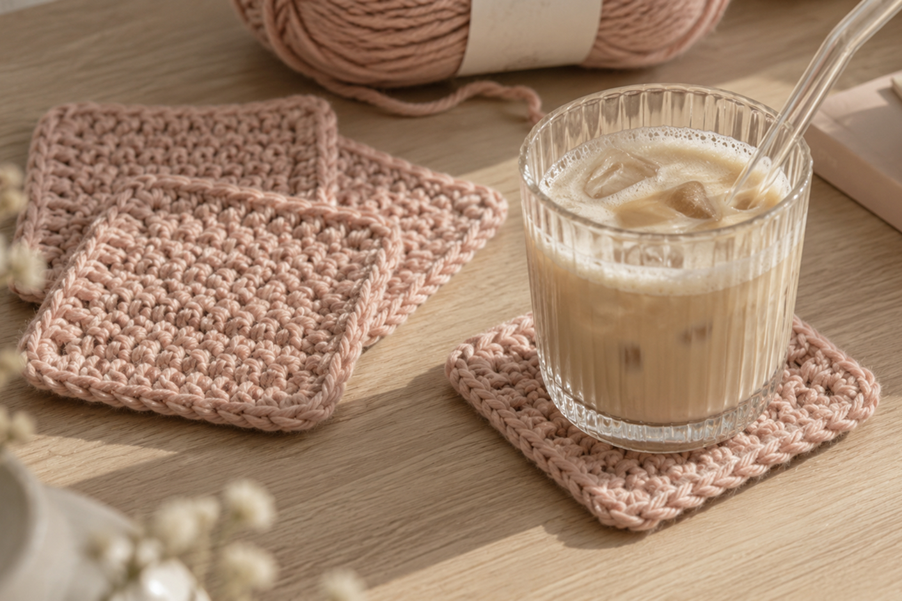
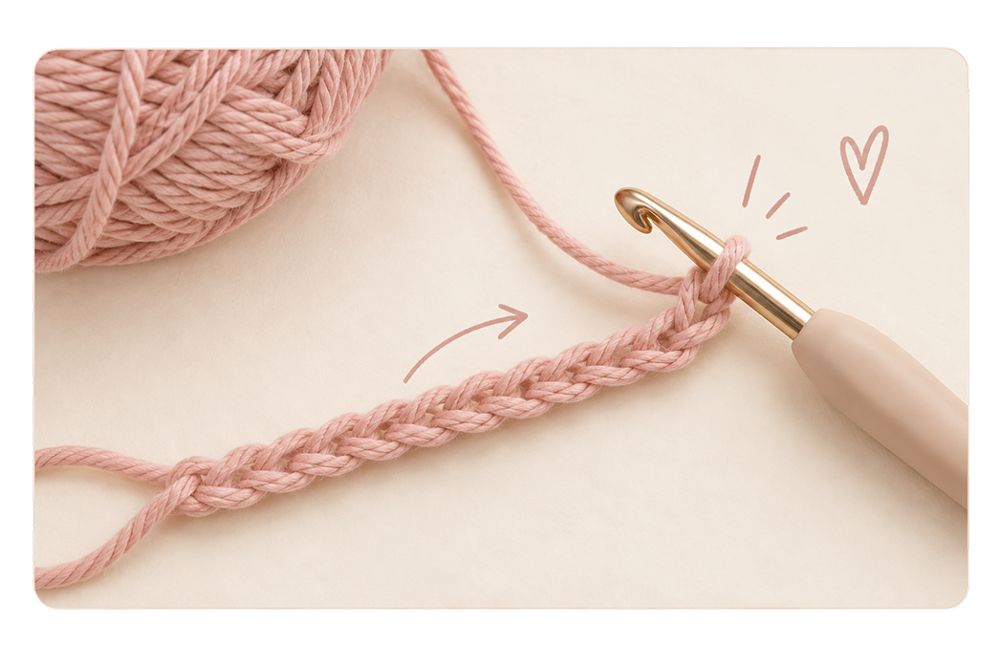
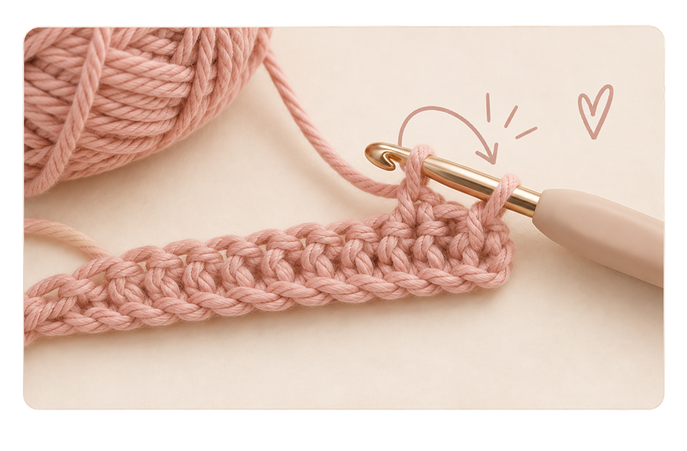
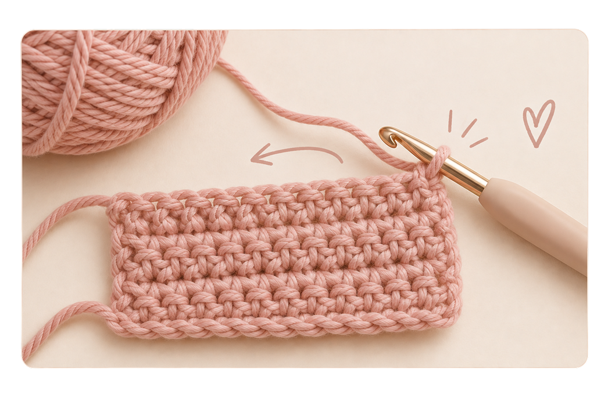
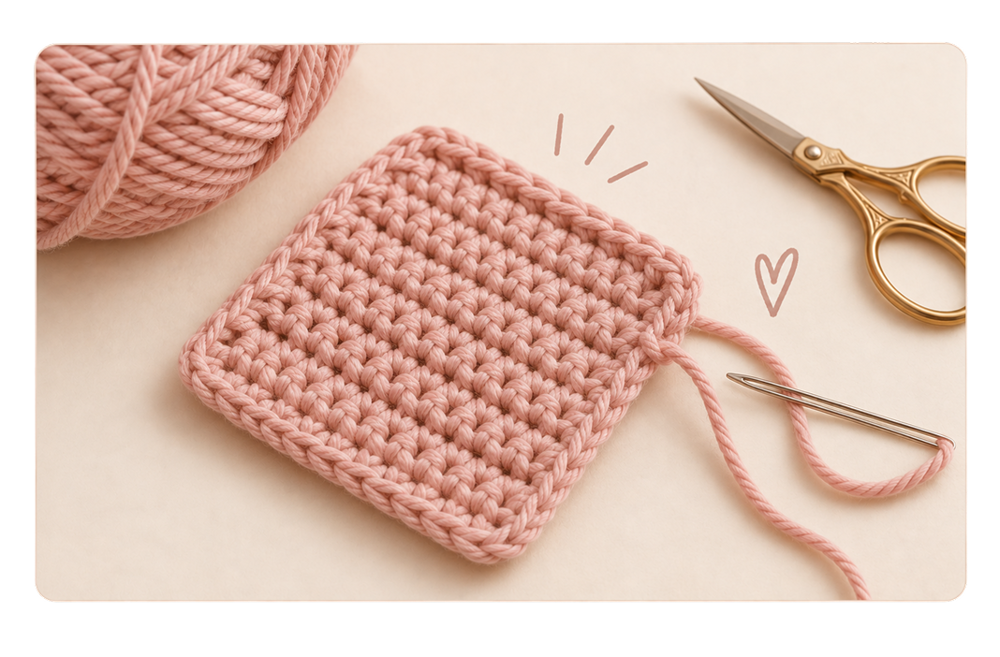
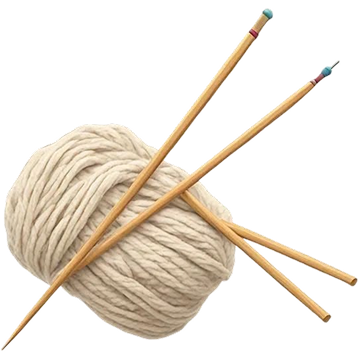

Garn

Du er klar ♡
Nu skal det, du har lært, bruges i praksis. Vi starter med et lille og enkelt projekt, som er perfekt til din allerførste gang.
Start projektet →
Inden du starter ♡


Sådan gør du ♡

Lav en række luftmasker, indtil den har cirka den bredde, du ønsker.

Vend arbejdet og hækl fastmasker tilbage langs startkæden.

Vend efter hver række og fortsæt med fastmasker, indtil arbejdet er omtrent lige så højt, som det er bredt.

Klip garnet, træk enden gennem den sidste maske og hæft garnenderne.

Se lige dig ♡
Du har hæklet dit første projekt helt selv. Det behøver ikke være perfekt – det vigtigste er, at du kom i gang.
Kom i gang